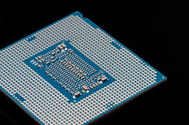

CPU

CPU är en förkortning för det engelska ordet "Central Proccesing Unit".
CPU kan också kallas för en processor, vilket är vad jag kommer att kalla den eftersom det är lättare.
Processorns jobb i datorn är att utföra programm, genom att använda primärminnet för att läsa in programmets maskinintuktioner
till processorns instruktionregister, och därefter utföra begärda operationer som beräkningar och datahantering.
Det finns 2 olika typer av processorer med olika starka punkter, RISC och CISC.
RISC eller Reduced Instruction Set Computing är bättre på att göra enkla operationer snabbt medans CISC (Complex Instruction Set Computing) är bättre
på att göra komplicerade operationer men inte lika snabbt som RISC. Dagens proccesorer kan inte kvalifieras så lätt i vardera grupp pågrund av att dom
har lånat så mycket teknik ifrån varandra.
En proccesor är idag uppbygda av drygt 1 miljard transistorer som sitter på en yta som är ungefär en cm².
Hur många transistorer som får plats på ett chip har hittills ökat enligt Moores lag som hävdar att varje 24:e månad så kommer antalet transistorer som får plats
på ett chip fördubblas.